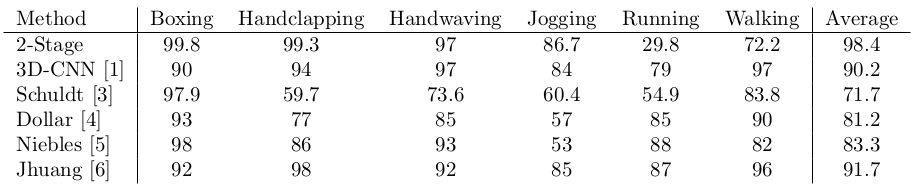

I am a senior undergraduate student at IIT Bombay pursuing a major in Mechanical Engineering and a minor in Computer Science and Engineering. My interest lies in areas of Artificial Intelligence with a focus on Computer Vision, Numerical, and Robotic Simulations. I have undertaken various projects, courses, and other experiences in these fields. I am also fascinated by other fields, including distributed computing, robotics, and optimization. I'm a member IITB Mars Rover Team and I'm also working on developing an efficient, accurate and versatile Human Activity Recognition system in the Machine Intelligence Program under the supervision of Prof. Asim Tewari.
Modeling and Recognition of Human Activities have been a hot research topic in recent times. It finds many practical applications like interactive healthcare, autonomous surveillance systems, entertainment, autonomous driving, computer graphics, etc. Classical approaches used handcrafted features (holistic and local) to model and classify the action. These required expertise and did not generalize well. Only in recent times, the problem has been addressed by deep learning-based methods such as 3D-CNN, Multi-stream networks, Hybrid-networks, etc. Instead of relying on the pre-determined set of features, these models hierarchically learn rich and domain-specific features. Due to the success of these deep-networks, there have been great improvements in the state-of-the-art accuracy of the recognition systems.
Despite these huge leaps, most of the Human Activity Recognition systems are computationally intensive and require huge resources. Also, the models are domain-specific thus, changing the working domain of the model requires re-training (except for bottom layers if transfer-learning is used) on the new dataset. In this project, the objective is to develop a computationally efficient, modular, and versatile model for activity recognition. We have developed a 2-Stage skeleton-based approach for modeling action, using single vision-based input (monocular RGB videos). Our model is more efficient, can easily be extended to different domains, and gives competitive performance to the state-of-the-art.
We proposed a unique 2-Stage skeleton-based approach to achieve the above goals. For now, we focused only on vision-based input in form of monocular RGB videos. The figure below shows the complete pipeline of our model.

The first stage of the model uses a Human Pose Estimation algorithm to localize the crucial Human joints responsible for the Pose. This step is done for each frame of the input video and localized joint coordinates are to be used to evaluate joint angles. This is shown in the figure below. The action is classified by studying temporal variations on these poses (joint angles). The video clip below shows action recognition on the KTH dataset.
Splitting the job into two stages introduces modularity in the model. Because the joint localization stage is independent of the domain and application, the model can quickly be modified and trained on a different dataset by just working on the classifier stage. Similarly, the joint localization stage can be modified independently of the classifier. For example, the pre-processing stage of classifier (trained on single-person action recognition dataset) can be tweaked to enable multiple-person action recognition, without retraining, as shown in the video below. This depicts the versatile nature of the model due to its modularity.
Our model is computationally efficient as compared to the state-of-the-art due to the shallow architecture of its' recurrent classifier. The following table shows a comparison of our model's accuracy on the KTH dataset with other state-of-the-art models. Our model gives better or comparable accuracies in addition to being efficient and versatile thus, fulfilling our original objective. We are also currently working on an implementation of the project in form of a payment system. If you wish to know further about the project please, feel free to contact me.

Following are the issues being faced by the current model and the possible directions in which work can be done to solve them -